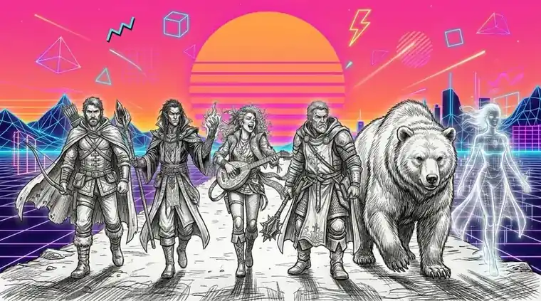

Le Maître-Quai pose sa gaffe en travers de la passerelle, sans hâte. « Personne ne franchit les Quais d'Os sans laisser quelque chose derrière lui. Un nom, une dent, un souvenir — je ne suis pas regardant. » Derrière lui, les côtes du grand poisson mort grésillent sous les lanternes.
Je lui montre l'insigne de mon ancienne unité. « Ce nom-là, je l'ai déjà laissé quelque part. »
Il prend l'insigne, le tourne dans la lumière, et son sourire tombe d'un coup. « La Onzième. Vous étiez à la Mauvaise Porte. » Il recule d'un pas et libère le passage. Derrière toi, un racleur détale vers les quais — il a entendu.
Je le laisse partir. Je veux savoir à qui il court le dire.
Il file vers le refuge des Combleurs. Tu le suis ?
